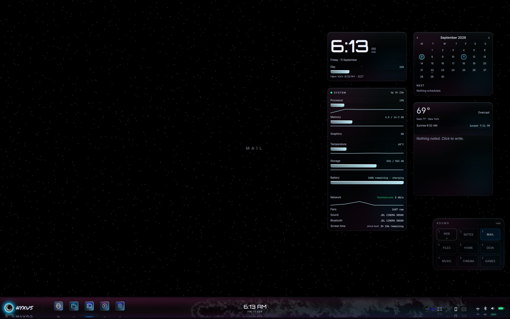
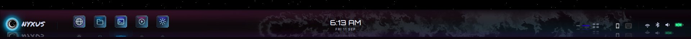
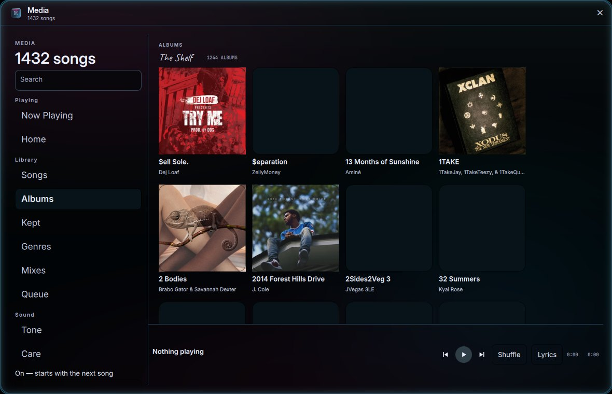
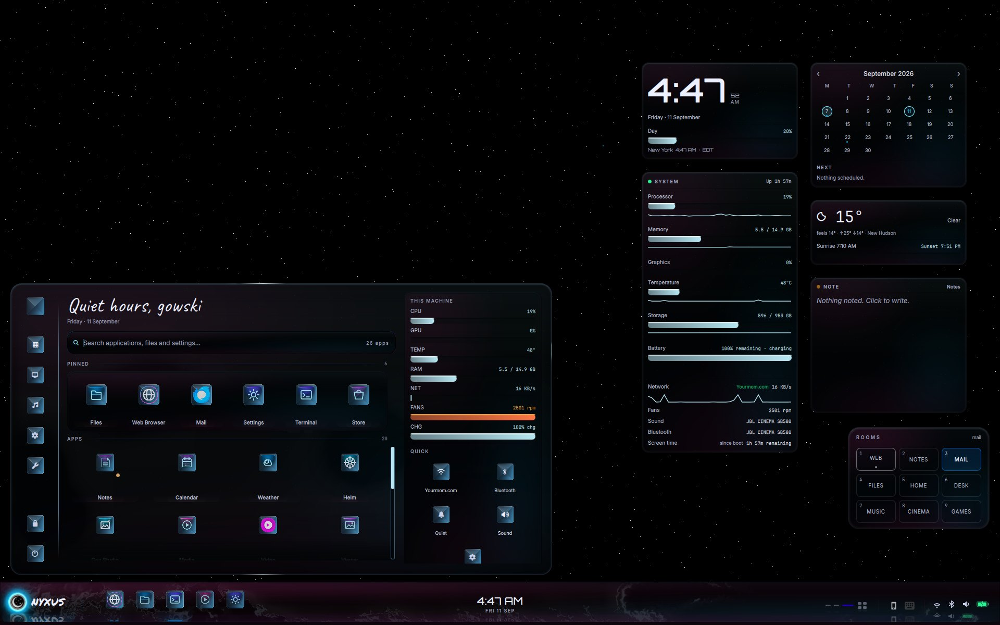
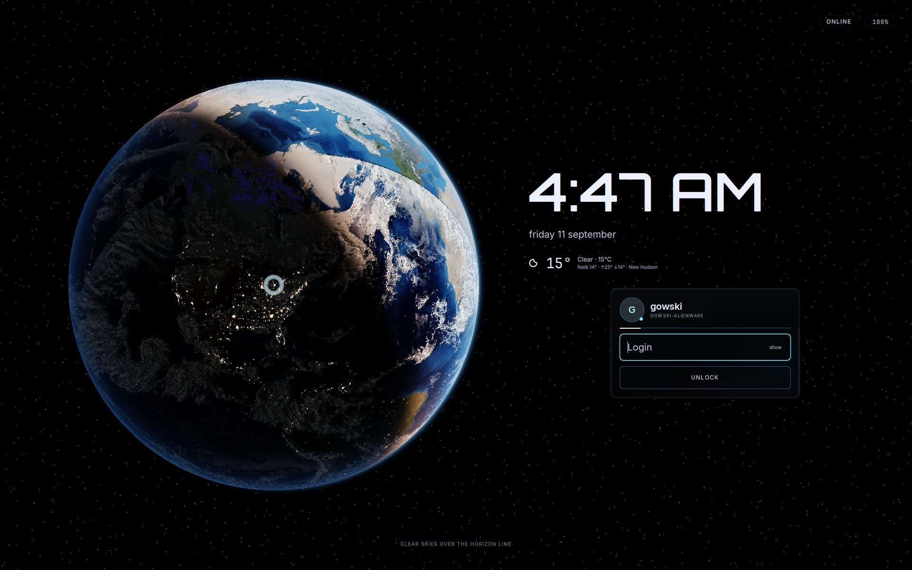
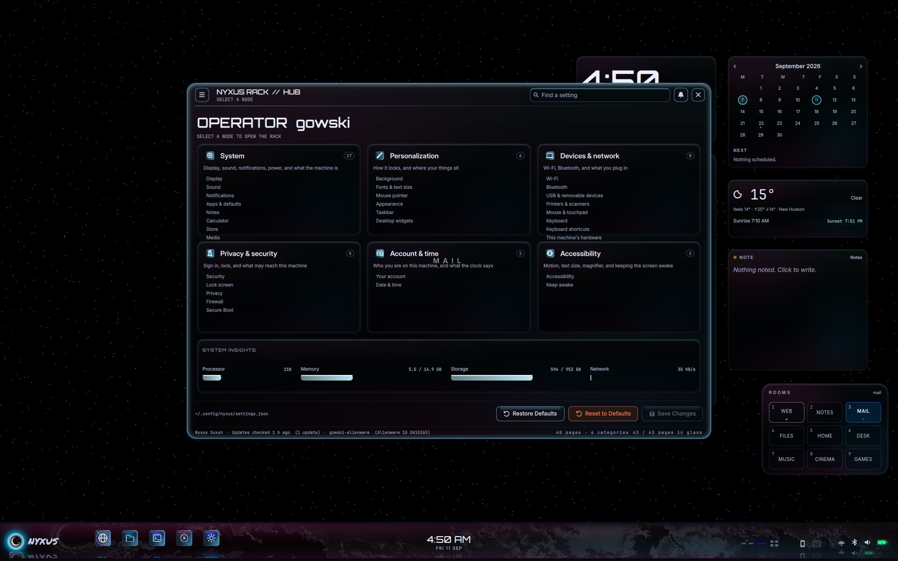
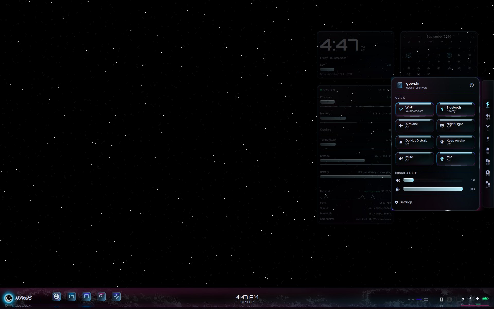

A daily-driver desktop for one Alienware. Hyprland compositor. Quickshell chrome. Starlight sky, a living bar, glass lock. Built as one piece — not a theme pack on someone else’s shell.
There is no panel rectangle. The bottom of the screen is a lit seam of living paint. Icons, clock, desks, and vitals sit on that shelf and throw a floor reflection into the swirl.

What it is. Top-layer Quickshell window, 84 px exclusive zone, click-through living paint underneath. Magma is reserved for what matters (charging, the no). Glacier ice is chrome, not fill.
How it’s made. Bar.qml + BarSeam.qml. Dock gems are crystal identity, not glass furniture. Reflections are a flipped copy with foreshortening — not a live shader grab of the sibling (that class of grab can take the shell down).
The ground is not a JPEG of stars. It is a shader: three incommensurate lattices of hard points on true black, occupancy-hashed and jittered so they never read as a grid. No bloom, no diffraction spikes — a fibre tip, not a photographed star. Twinkle is occupancy over time, not a halo.
How it’s made. shaders/headliner.frag on a Bottom-layer Quickshell window. Compositor blur is off, so type stays pixel-perfect. A still wallpaper can sit underneath; Starlight wins the pixel until you switch sky mode.
The bar’s swirl is not a color wash. It is a fluid. Dye is material in a velocity field. Idle, it rolls and climbs on its own. Pointer and beat can feed it. It is never compositor blur.
How it’s made. Swirl.qml ports a Navier–Stokes chain on the GPU: splat → curl → vorticity → divergence → pressure ×22 → advect velocity → advect dye → display. Same solver on the bar, flyouts, and window rims. The display pass treats the dye as thickness — black-shadow glass that occludes a faint glow — so you read the swirl by what it hides, not by a tint.
When music is actually on the sink, the bar turns over. The swirl face flips to a spectrum: thin columns, mirrored in the seam, magma at the peaks. Notes ride the same field. Timed lyrics, when a track has them, launch from that same mirror line so the words are in the music, not a sticker on top of it.
How it’s made. One long-lived nyxus-beat-engine: STFT, mel bands, SuperFlux onset, tempo, a phase-locked loop that predicts the downbeat. BarSpectrum.qml is its own shader, not a Swirl. Keep-out zones so columns never run through the dock, clock, or vitals. Lyrics are LRC lines placed on free spans of that field.
The library is a Nyxus app, not a browser tab. Shelf, albums, keeps, tone. The window rim is the same ice glass as the rest of the chrome — and that rim is piped to the beat engine, so the border pulses on the music, not on a timer.

How it’s made. Media.qml + a local library. Album art is the file, not a generated square. BorderPulse.qml writes Hyprland’s active border from Beat.kick — predicted, once per beat, falling between hits. Idle is a still glacier ring. No fake pulse with nothing playing.
Quiet hours, this machine, pinned apps, Quick toggles. One glass card — not a full-screen launcher that throws the desktop away.

How it’s made. Launcher.qml as a layer-shell surface. Widgets stay on the sky. Search hits apps, files, and Settings pages from one field.
Earth on the left. Time, weather, and a glass login card on the right. Super+L, Start, and the power menu all hit the same lock — not a second greeter.

How it’s made. Lock.qml + PAM via hyprlock as the authenticator, engaged by loginctl lock-session. The card is furniture glass (Pane + swell + a 1 px glacier seam). Magma is the no.
One Settings window. Tree on the left, the page on the right. The old diagnostic log column is gone so the page can breathe. The flyout is Quick, Sound, Network, Bluetooth, and the rest of the rail — nearby Wi-Fi and BT lists, not just radio toggles.

Settings. Settings.qml — FloatingWindow, catalog pages, live controls. 40 pages in glass.

Flyout. SidePanel.qml. Night Light, DND, Airplane, Keep Awake, Mute, Mic. Join a network from the list.
Start opens and closes. The flyout comes up. Settings maps. A terminal states the build. Recorded on this machine, empty workspace, Starlight on.
This is not a tinted GTK theme. Every surface is a material with a shader behind it. The palette is not a list of hex codes to fill rectangles — it is emission ladders sampled from nebula photographs, then used as thickness, etch, and dye.
Panels, Start, Settings, flyout: Pane + swell + a 1 px glacier seam. The body is empty. You see the sky through smoked glass that bends. No compositor blur — blur is off so the type stays sharp.
Dock gems are not icons on a plate. ocular_crystal.frag ray-marches a 3-D signed distance field baked from the mark. Height is 16-bit so the normals do not band. The glyph is laser-etched in the stone — points of light in ice — never a PNG glued on top.
Each accent is a five-band emission ladder (haze / deep / body / accent / glow) measured off nebula stills. Grounds sit at true black. Saturation stays high into the darks. Magma (#ff7847) is the only hot corner, and it is reserved for what matters. glacier[0] teal is banned as a fill. Nothing in the shell writes a raw hex; tokens live in one file.
One process, nyxus-beat-engine, hears the sink. It does not fake a pulse on silence. When music is on, a PLL knows the downbeat ahead of time so rims, swirl, and spectrum land on the hit. Window glow is Hyprland’s own border, rewritten from that kick.
| Product | Nyxus Suxyn · image nyxus-suxyn · 2026.09.02 |
|---|---|
| Machine | Alienware 15 DA15265 · eDP-1 1920×1200 @ 165 Hz · scale 1 |
| Compositor | Hyprland 0.56.2 · blur off · XWayland scale 1 |
| Shell | Quickshell 0.3.1 · QML only for daily chrome |
| Sky | Starlight headliner shader. Six stills in Settings ▸ Background. |
| Login | GTK greeter on purpose. Quickshell greeter is parked until it can fail open to a TTY. |
| This repo | This machine’s shell. Not Nyxus-Core, not another PC, not personal apps. |